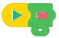
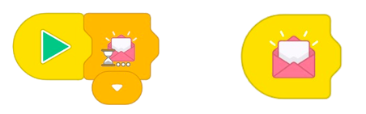
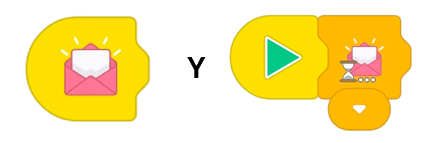
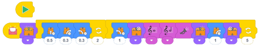

En esta actividad final, los estudiantes aprenden a usar mensajes y eventos de inicio, y luego crean su propio programa usando una variedad de tipos de bloques.
Esta actividad presenta dos de los tipos de bloques más complicados en EdBlocks: mensajes y eventos de inicio.
Debido a que este tipo de bloques pueden ser un desafío, esta actividad lo utiliza como maestro para participar,
lo que ayuda a simplificar la exposición inicial del estudiante.
Deberá programar un Edison para que sea el líder, enviando el mensaje rosa.
Los estudiantes necesitarán que sus programas reaccionen al recibir ese mensaje, haciendo que sus robots
Edison "bailen".
Los robots Edison pueden enviarse y recibir mensajes infrarrojos entre sí.
En EdBlocks, los sobres de colores son los bloques que se utilizan para esta función de mensajería.
Para usar los mensajes, necesita al menos dos robots Edison y deberá escribir un programa separado para cada robot.
Un robot deberá enviar uno de los mensajes de colores como parte de su programa.
El segundo robot necesitará tener un programa que contenga un bloque de mensaje de 'esperar hasta' o
'iniciar evento' del mismo color.
Cuando el programa del primer robot progresa al bloque 'enviar mensaje', enviará un mensaje de infrarrojos.
Esto activará el segundo robot para comenzar o continúe su programa desde el bloque de mensajes en el
programa del segundo robot.
Los bloques 'iniciar eventos' permiten al usuario hacer que un subprograma comience a partir de un evento
específico mientras se ejecuta el programa principal.
Estos bloques emulan el concepto de programación informática de "interrupciones".
Los eventos de inicio permiten a los usuarios colocar programas en capas verticalmente, con programas
secundarios que interrumpen el programa principal cuando se activa el evento de inicio.
Para usar un evento de inicio, simplemente agréguelo al espacio de trabajo en la aplicación EdBlocks y
arrastre y suelte bloques de programa después de él, como lo haría con el bloque de inicio normal.
Cuando descargue su programa en Edison, se descargarán tanto el programa principal como el subprograma que
comienza con el nuevo evento de inicio.
Cuando se presiona el botón de reproducción (triángulo) en Edison, Edison ejecutará el programa principal.
Si ocurre la condición del evento de inicio, Edison ejecutará el subprograma de evento de inicio hasta su
finalización, luego regresará al programa principal y continuará con el programa principal.
Esto sucederá siempre que se cumplan las condiciones del evento de inicio.
Si no hay bloques adjuntos al programa principal, Edison esperará hasta que se cumpla la condición del evento
de inicio y luego ejecutará el subprograma de evento de inicio.
• Esta actividad requiere que un robot Edison sea el 'líder' y envíe el mensaje rosa:

• Asegúrese de que los programas de "rutina de baile" de los estudiantes comiencen solo una vez que se
reciba el mensaje rosa.
Para hacer esto, los estudiantes deben comenzar su baile después de un bloque de mensaje rosa
'esperar hasta' o después del evento de inicio del mensaje rosa:

• La mensajería de Edison utiliza infrarrojos, que tiene un alcance limitado, similar al control remoto de
un televisor.
Si algún robot no detecta el mensaje rosa, es posible que esté demasiado lejos del robot líder.
• En EdBlocks, la mensajería está restringida a los seis canales preestablecidos representados por los seis
sobres de colores.
Los robots deben usar el mismo sobre de color para enviar y recibir.
Por ejemplo, si el robot A envía el mensaje azul pero el robot B tiene 'esperar hasta el mensaje verde'
en su programa, el mensaje enviado por el robot A no activará al robot B para que continúe con su programa.
• Explique a los alumnos qué está haciendo el bloque de mensajes.
En esta actividad, cuando el robot líder envía el mensaje rosa, es el equivalente a que ese robot diga
"¡empieza!" a todos los demás robots.
Los otros robots saben que deben pasar al siguiente bloque de sus programas.
Explique que el robot líder no les está diciendo a los otros robots cómo bailar, solo que deben pasar de
su bloque 'esperar hasta' a sus bloques de baile.
• Recuerde a los estudiantes que debido a que Edison lee EdBlocks de izquierda a derecha, Edison esperará hasta que se reciba un bloque de mensajes antes de continuar con cualquier bloque ubicado a la derecha del bloque de mensajes "esperar hasta".
1. Explore los otros bloques de inicio. Intente crear programas que utilicen los diferentes bloques de inicio.
2. Intente crear un programa usando el bloque de inicio principal y un subprograma usando un bloque de inicio.
Experimente cómo Edison cambia del programa principal al subprograma cuando se activa la condición de
inicio.
Tenga en cuenta: la respuesta 2 es un ejemplo de respuesta. Los resultados de los estudiantes dependerán de sus experiencias. Una nota sobre la pregunta 2: hacer que los estudiantes capturen sus programas con una herramienta de captura de pantalla es una buena oportunidad para practicar programas de computadora y dispositivos periféricos adicionales, incluida la impresora.
1.

2.
